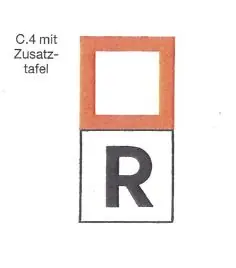

§ 14.01 Allgemeine Bestimmungen
Rheinschiffahrtspolizeiverordnung
1. | Die Grenzen der Reeden werden am Ufer durch das Tafelzeichen C.4 (Anlage 7) mit einer quadratischen weißen Zusatztafel mit dem Buchstaben "R" bezeichnet; gegebenenfalls kann das Zeichen durch eine dreieckige weiße Zusatztafel ergänzt sein, auf der in schwarzen Zahlen die Länge der Reede angegeben ist. |  |
2. | Auf den Reeden dürfen Fahrzeuge nur stilliegen | |
a) | auf den nach § 7.06 gekennzeichneten Liegestellen; | |
b) | zum Zweck des Ladens oder Löschens an den hierfür bestimmten Stellen, zu denen die Zufahrten je nach Bedarf freigehalten werden müssen. | |
3. | Fahrzeuge, für die keine besonders gekennzeichneten Liegestellen vorgesehen sind, dürfen auf den Reeden nur dann stilliegen, wenn ihnen von der zuständigen Behörde ein Liegeplatz zugewiesen wird. | |
4. | Auf den Reeden dürfen bis zu drei Fahrzeuge nebeneinander liegen, sofern nicht durch die Bestimmungen für die einzelnen Reeden diese Anzahl eingeschränkt oder nach § 7.05 Nr. 2, 3 oder 4 eine andere Regelung getroffen wird. |